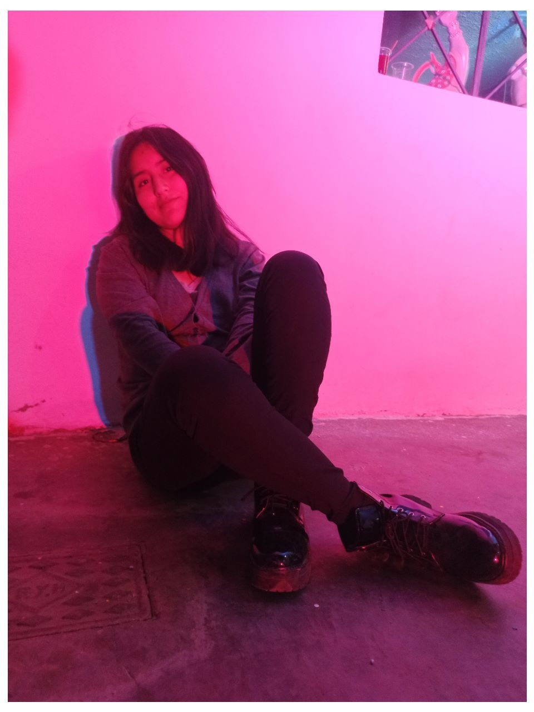

Detras de un Atardecer
¡Bienvenido a Detrás de un Atardecer! Somos un estudio de fotografía especializado en capturar los hermosos momentos. Cada una de nuestras fotografías es única y especialmente cuidada, ya que creemos que cada momento es único y merece ser capturado de la mejor manera posible.
Contactenos AhoraMis Habilidades
Maykel Bautista es un fotógrafo altamente capacitado con una gran variedad de habilidades y técnicas fotográficas. Él es muy hábil en la composición de imágenes, sabiendo cómo colocar los elementos en el encuadre de manera atractiva y equilibrada. Además, tiene un ojo agudo para los detalles, lo que le permite capturar imágenes con una gran nitidez y claridad.
También es experto en el uso de la luz, sabiendo cómo utilizarla para crear atmósferas dramáticas o suaves y cálidas. Además, Maykel es muy creativo y siempre está buscando nuevas formas de contar historias a través de su trabajo fotográfico. Es un fotógrafo comprometido y dedicado, siempre trabajando para mejorar sus habilidades y producir imágenes de alta calidad.
Sobre mi Trabajo
"Detrás de un Atardecer" es una gran empresa de fotografía que ha logrado el éxito gracias al talento y dedicación de su fundador, Maykel Bautista. Desde el primer día, Maykel ha trabajado arduamente para crear imágenes excepcionales que reflejen la belleza y emoción del mundo que nos rodea. Su ojo artístico y su habilidad técnica son incomparables, y ha sabido utilizarlos para crear una amplia variedad de imágenes impresionantes, desde paisajes dramáticos hasta retratos íntimos.
Maykel ha sido capaz de llevar "Detrás de un Atardecer" al éxito gracias a su pasión y su dedicación al trabajo fotográfico. Siempre está buscando nuevas formas de contar historias a través de su trabajo y de ofrecer a sus clientes imágenes excepcionales que capten su atención y emocionen a sus sentidos
Mis proyectos
Abstracto
Flores
Paisajes
Vision
¿Que dicen de nosotros?

Carlos Condor
"He tenido el placer de trabajar con Maykel y su equipo en Detrás de un Atardecer en varias ocasiones y siempre he quedado completamente satisfecho con el resultado. Maykel es un fotógrafo increíblemente talentoso y siempre logra capturar las imágenes perfectas, incluso en situaciones difíciles.

Usuario de instagram
Adriana Rosales
"He tenido el placer de trabajar con Detrás de un Atardecer en varias ocasiones y siempre he quedado completamente satisfecha con el resultado. Maykel es un fotógrafo increíblemente talentoso y siempre logra capturar las imágenes perfectas, incluso en situaciones difíciles.